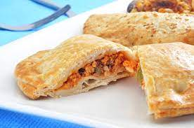

EMPANADAS ARGENTINAS
Nuestros Productos
Carne
Un clásico irresistible. Rellena de jugosa carne de res sazonada con
especias, cebolla y aceitunas, esta empanada es un deleite para los
amantes de la carne.
Jamon y queso
La combinación perfecta de sabores.
El jamón ahumado se mezcla con queso derretido, creando un relleno cremoso y salado que no
puedes resistir.
Atun

La combinación perfecta de sabores.
El jamón ahumado se mezcla con queso derretido, creando un relleno cremoso y salado que no
puedes resistir.
Pollo
La combinación perfecta de sabores.
El jamón ahumado se mezcla con queso derretido, creando un relleno cremoso y salado que no
puedes resistir.
Espinaca y Queso
La combinación perfecta de sabores.
El jamón ahumado se mezcla con queso derretido, creando un relleno cremoso y salado que no
puedes resistir.
Hacenos tu pedido haciendo clic aquí 


Sobre Nosotros
En el corazón mismo de Argentina, nació una pequeña empresa que se convertiría en el
símbolo del sabor y la tradición de las empanadas: María Marta y sus Empanadas Argentinas. Fundada
por María Marta Rodríguez, una apasionada cocinera y amante de la comida, la historia de esta
empresa está tejida con el espíritu inconfundible de la tierra argentina.
La historia de María Marta es una que se teje entre risas, ollas humeantes y reuniones familiares en torno a una mesa llena de empanadas. María Marta, con su carisma y su sazón única, comenzó a cocinar empanadas desde su hogar para compartir con amigos y vecinos. El aroma irresistible de sus creaciones se extendía por el barrio, atrayendo a todos aquellos que buscaban el auténtico sabor argentino.
Lo que comenzó como un pequeño pasatiempo culinario se convirtió rápidamente en una pasión y una visión. Con el tiempo, María Marta decidió compartir sus empanadas con un público más amplio, llevando sus creaciones a ferias locales y eventos comunitarios. La respuesta fue abrumadora: la gente no solo disfrutaba de sus empanadas, sino que también se enamoraba de la historia detrás de cada una.
Las empanadas de María Marta son más que simples bocados, son un pedazo de la cultura argentina en cada mordisco. Cada receta tiene raíces en tradiciones familiares y secretos transmitidos de generación en generación. La carne jugosa, el queso derretido y los sabores irresistibles evocan recuerdos de reuniones familiares y comidas compartidas con amor.
A medida que la demanda crecía, María Marta decidió dar un paso audaz y abrir su pequeña tienda de empanadas. El rincón acogedor se convirtió en un lugar de encuentro para los amantes de la comida, donde podían disfrutar de empanadas auténticas y llenas de historia. La tienda se llenaba de risas, conversaciones animadas y el sonido reconfortante de las empanadas crujientes.
La pasión y el esfuerzo de María Marta no pasaron desapercibidos. Pronto, su pequeña tienda ganó reconocimiento local y comenzó a recibir elogios por la autenticidad de sus empanadas y la atención a los detalles. María Marta se convirtió en un nombre sinónimo de calidad y tradición, y sus empanadas empezaron a encontrar su camino hacia los corazones y los paladares de cada vez más personas.
Hoy, María Marta y sus Empanadas Argentinas sigue creciendo, pero nunca ha perdido su esencia familiar y su pasión por la autenticidad. Cada empanada que sale de su cocina sigue siendo una pieza de la historia argentina, un tributo a las raíces y a la dedicación de una mujer que transformó su amor por la cocina en una empresa que trasciende fronteras.
Bienvenidos a la historia de María Marta y sus Empanadas Argentinas, donde el sabor de la tradición se mezcla con el calor de la hospitalidad argentina. Te invitamos a unirte a nosotros en este viaje culinario que celebra los sabores de la tierra y el espíritu inquebrantable de una pequeña empresa que conquistó el mundo con sus deliciosas empanadas. ¡Bienvenidos a María Marta, donde cada bocado es un abrazo de Argentina!
La historia de María Marta es una que se teje entre risas, ollas humeantes y reuniones familiares en torno a una mesa llena de empanadas. María Marta, con su carisma y su sazón única, comenzó a cocinar empanadas desde su hogar para compartir con amigos y vecinos. El aroma irresistible de sus creaciones se extendía por el barrio, atrayendo a todos aquellos que buscaban el auténtico sabor argentino.
Lo que comenzó como un pequeño pasatiempo culinario se convirtió rápidamente en una pasión y una visión. Con el tiempo, María Marta decidió compartir sus empanadas con un público más amplio, llevando sus creaciones a ferias locales y eventos comunitarios. La respuesta fue abrumadora: la gente no solo disfrutaba de sus empanadas, sino que también se enamoraba de la historia detrás de cada una.
Las empanadas de María Marta son más que simples bocados, son un pedazo de la cultura argentina en cada mordisco. Cada receta tiene raíces en tradiciones familiares y secretos transmitidos de generación en generación. La carne jugosa, el queso derretido y los sabores irresistibles evocan recuerdos de reuniones familiares y comidas compartidas con amor.
A medida que la demanda crecía, María Marta decidió dar un paso audaz y abrir su pequeña tienda de empanadas. El rincón acogedor se convirtió en un lugar de encuentro para los amantes de la comida, donde podían disfrutar de empanadas auténticas y llenas de historia. La tienda se llenaba de risas, conversaciones animadas y el sonido reconfortante de las empanadas crujientes.
La pasión y el esfuerzo de María Marta no pasaron desapercibidos. Pronto, su pequeña tienda ganó reconocimiento local y comenzó a recibir elogios por la autenticidad de sus empanadas y la atención a los detalles. María Marta se convirtió en un nombre sinónimo de calidad y tradición, y sus empanadas empezaron a encontrar su camino hacia los corazones y los paladares de cada vez más personas.
Hoy, María Marta y sus Empanadas Argentinas sigue creciendo, pero nunca ha perdido su esencia familiar y su pasión por la autenticidad. Cada empanada que sale de su cocina sigue siendo una pieza de la historia argentina, un tributo a las raíces y a la dedicación de una mujer que transformó su amor por la cocina en una empresa que trasciende fronteras.
Bienvenidos a la historia de María Marta y sus Empanadas Argentinas, donde el sabor de la tradición se mezcla con el calor de la hospitalidad argentina. Te invitamos a unirte a nosotros en este viaje culinario que celebra los sabores de la tierra y el espíritu inquebrantable de una pequeña empresa que conquistó el mundo con sus deliciosas empanadas. ¡Bienvenidos a María Marta, donde cada bocado es un abrazo de Argentina!